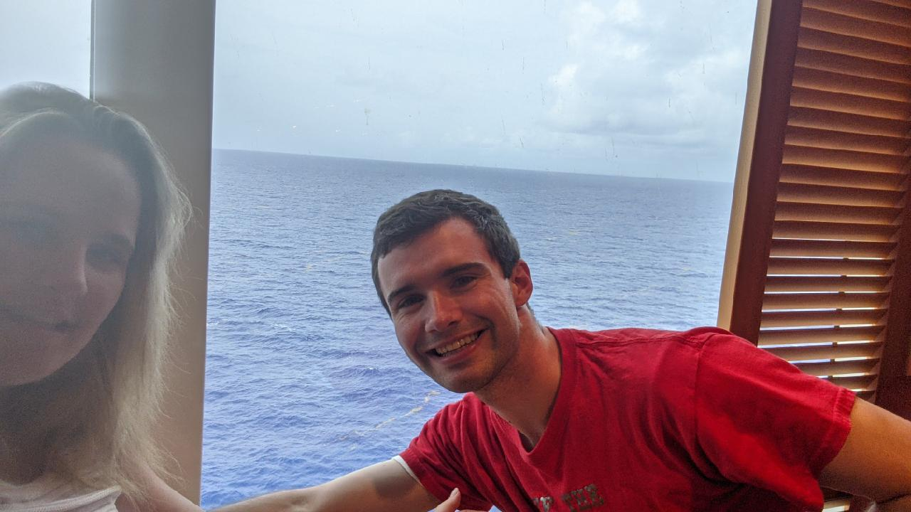

 R. Gunnar Schmidt
WDD 230: Assignment Portal
Lesson 02: Title
Lesson 03: Title
Lesson 04: Title
Lesson 05: Title
Lesson 06: Title
Lesson 07: Title
Lesson 08: Title
Lesson 09: Title
Lesson 10: Title
Lesson 11: Title